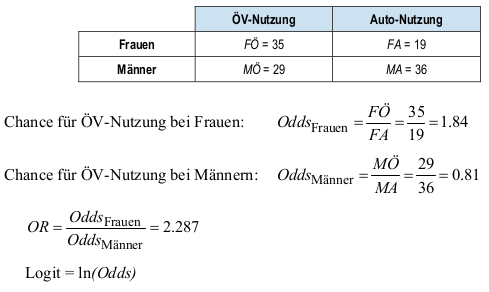
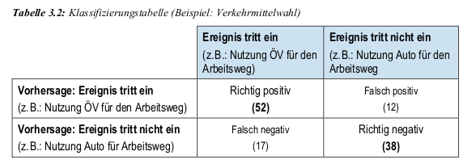

data_vkm <- read.csv("../data/verkehrsmittel.csv")
# Nullmodell: 'mode' regressiert auf Konstante '1'
model_0 <- glm(mode ~ 1, # glm: generalisiertes lineares Modell
data = data_vkm,
family = binomial()) # logistische Regresion = Binomialmodell
model_1 <- glm(mode ~ zeit + kosten + umsteigen + geschlecht,
data = data_vkm,
family = binomial())Binär logistische Regression
Idee und Einführung
- Idee:
- Abhängigkeit einer dichotomen Variablen von unabhängigen Variablen / Regressoren
- binär/dichotom: ja/nein, trifft zu/ trifft nicht zu, männlich/weiblich, Raucher/nicht Raucher
- Dummy-Variable:
- Ebenfalls 0/1 codiert mit Bedeutung z.B. ja/nein
- wird allgemein verwendet für unabhängige und abhängige Variablen
- Beispiel: Studie zur Verkehrsmittelwahl
- Pendlerfahrten: Arbeitsplatz \(\ra\) zu Hause
- \(\ra\) Privatauto vs. öffentlicher Nahverkehr (ÖV)
- Datensatz
verkersmittel.csvmit den Variablen - mode: Verkehrsmittel ($0 = $ Privatauto vs. $ 1 = $ ÖV)
- zeit: Fahrzeitdifferenz zwischen ÖV und Auto
- kosten: Kostendifferenz zwischen ÖV und Auto
- geschlecht: 1 = weiblich \(\ra\) 2 = männlich
- umsteigen: Zahl notwendiger Umstiege bei Nutzung der ÖV
- Fragestellung: Von welchen Faktoren hängt die Wahl des Verkehrsmittels ab?
Binär logistische Regression - Herleitungen
Modellgleichungen:
\[ \begin{align*} P(Y_i = 1)&=\frac{e^{\beta x_i}}{1+e^{\beta x_i}}\text{~~mit~~} \beta x_i = \beta_0 + \beta_1 x_{i1} + \ldots + \beta_k x_{ik} \\ 1 - P(Y_i = 1)&=1 - \frac{e^{\beta x_i}}{1+e^{\beta x_i}}= \frac{1+e^{\beta x_i}}{1+e^{\beta x_i}} - \frac{e^{\beta x_i}}{1+e^{\beta x_i}} = \frac{1}{1+e^{\beta x_i}} \end{align*} \]
- \(P(Y_i=1)\) ist die Wahrscheinlichkeit, dass abh. Variable \(Y_i\) den Wert 1 annimmt, bezogen auf die Beobachtung \(i\) der \(i=1,\ldots,n\) Beobachtungen im Datensatz
- \(k\): Anzahl der unabhängigen Variablen
- \(x_{ik}\) der \(i-\)te Wert der \(k\)-ten unabhängigen Variablen
Odds (Oddsratio) und logarithmierte Odds (log-odds / logits):
\[ \begin{align*} Odds_{1/0}&=\frac{P(Y_i = 1)}{P(Y_i = 0)}=\frac{P(Y_i = 1)}{1-P(Y_i = 1)} =\frac{e^{\beta x_i}}{1+e^{\beta x_i}} \times 1+e^{\beta x_i}=e^{\beta x_i}\\ LogOdds_{1/0}&=\log\left(Odds_{1/0}\right)=\beta x_i = \beta_0 + \beta_1 x_{i1} + \ldots + \beta_k x_{ik} \end{align*} \]
Warning
Etwas andere Notation als im Studienbrief, aber derselbe Grundgedanke.
Binär logistische Regression - Umsetzung in R
Zuerst laden wir die Daten und schätzen zwei Modelle: Ein Nullmodell, das nur den Achsenabschnitt enthält, und ein Vollmodell, das alle relevanten unabhängigen Variablen berücksichtigt.
Nullmodell/Trainingsmodell vs. Testmodell
glm(): generalisiertes lineares Modell (vorher:lm\(\ra\) lineares Modell)- Nullmodell: ein Modell mit nur Achsenabschnitt ist gleich einer Mittelwertsregression: \(\bar{Y}=\frac{1}{n}\sum_{i=1}^n Y_i\) \(=\frac{1}{n} (n_{1} \times 1 + n_{0}\times 0)=\frac{n_1}{n}\); Anteil Einsen an gesamten Beobachtungen; sind im Datensatz 25-Einsen und 75-Nullen dann ergibt die Nullmodell-Regression \(0.25= 25\%\) der \(n=100\) Personen nutzen ÖV.
Die Zusammenfassung des Nullmodells zeigt diesen Mittelwert.
summary(model_0)
Call:
glm(formula = mode ~ 1, family = binomial(), data = data_vkm)
Coefficients:
Estimate Std. Error z value Pr(>|z|)
(Intercept) -0.1515 0.1839 -0.824 0.41
(Dispersion parameter for binomial family taken to be 1)
Null deviance: 164.29 on 118 degrees of freedom
Residual deviance: 164.29 on 118 degrees of freedom
AIC: 166.29
Number of Fisher Scoring iterations: 3Anschließend betrachten wir das volle Modell.
summary(model_1)
Call:
glm(formula = mode ~ zeit + kosten + umsteigen + geschlecht,
family = binomial(), data = data_vkm)
Coefficients:
Estimate Std. Error z value Pr(>|z|)
(Intercept) -3.38784 1.00131 -3.383 0.000716 ***
zeit 0.09703 0.04743 2.046 0.040793 *
kosten -0.01127 0.02501 -0.451 0.652134
umsteigen 0.22231 0.55866 0.398 0.690680
geschlecht 1.04516 0.46406 2.252 0.024308 *
---
Signif. codes: 0 '***' 0.001 '**' 0.01 '*' 0.05 '.' 0.1 ' ' 1
(Dispersion parameter for binomial family taken to be 1)
Null deviance: 164.29 on 118 degrees of freedom
Residual deviance: 120.55 on 114 degrees of freedom
AIC: 130.55
Number of Fisher Scoring iterations: 5Interpretation
- Signifikanz: Zeitdifferenz (\(p = 0.04\)) & Geschlecht (\(p = 0.02\)) sind signifikant. Umsteigezeit & Kosten sind insignifikant.
- Vorzeichen: Ein positives Vorzeichen deutet auf einen positiven Effekt hin, ein negatives auf einen negativen Effekt.
- Dummy-Variable Geschlecht: Die kleinere Codierung (Frau=1) ist die Referenzkategorie zu Mann=2. Der positive Koeffizient \(\beta_{4}=1.04516 > 0\) zeigt einen positiven Effekt für Männer. Intern codiert
Rdies als 0/1, sodass der Wechsel von \(x_{4}=\)Frau\(=0\) zu \(x_{4}=\)Mann\(=1\) den Logit um \(\beta_4 = 1.04516\) erhöht. - Die Wahrscheinlichkeit \(P(Y_i =1)\), dass eine Person \(i\) das Privatauto nutzt, erhöht sich bei Männern.
- AIC-Vergleich: \(AIC_0 = 166.29 > AIC_1 = 130.55\): Je kleiner der AIC, desto besser der Modellfit. Der absolute Wert ist nicht interpretierbar, nur der Vergleich zwischen Modellen ist aussagekräftig.
Nullmodellabweichung: Omnibus-Test
Idee:
- Vergleich zwischen Nullmodell (nur Achsenabschnitt) und Testmodell mit erklärenden Variablen.
- Testet, ob das Modell insgesamt einen signifikanten Erklärungsbeitrag leistet.
- Basis: Differenz der Abweichungen (Deviance) zwischen den Modellen.
Teststatistik:
- Chi-Quadrat-Wert: ( ^2 = - )
- Freiheitsgrade: ( df = {} - {} )
- Signifikanzbewertung: ( p = 1 - (^2, df) )
R-Umsetzung:
# Berechnung der Omnibus-Teststatistik model_chi2 <- model_1$null.deviance - model_1$deviance chi2_df <- model_1$df.null - model_1$df.residual chi2_p <- 1 - pchisq(model_chi2, chi2_df) print(cbind(model_chi2, chi2_df, chi2_p))model_chi2 chi2_df chi2_p [1,] 43.73964 4 7.266406e-09Interpretation:
- Wenn ( p < 0.05 ): Modell signifikant besser als das Nullmodell.
- Wenn ( p ): Modell verbessert sich nicht signifikant.
- Beispielergebnisse: ( ^2 = 43.74, df = 4, p = 7.26 ^{-9} )
Modellgüte: Odds Ratio
- Problem und Motivation:
- Problem: bisherige Schätzparameter nicht aussagekräftig, bis auf VZ
- Grund: keine lineare Funktion (wo der Effekt direkt ablesbar ist), sondern \(logits\)
- Ziel: wie stark beeinflusst unabh. Variable Ergebnis – Chancenverhältnis zwischen den Modellen
- Odds Ratio (OR): Begriffe und Interpretation
- Odds: Chance – Oddsratio: Chancenverhältnis, im Beispiel unten Chance für Verkehrsmittelwahl ÖV vs. Auto bei Frauen im vgl. zu Männern – Logit: logarithmierte Odds
- ( OR > 1 ) steigert Wahrscheinlichkeit, ( OR < 1 ) senkt sie, ( OR = 1 ) bedeutet keine Veränderung
- Odds Ratio – Beispiel: \[ OR=\frac{M\text{Ö} / MA}{F\text{Ö} / FA} = \frac{M\text{Ö} \cdot FA}{MA \cdot F\text{Ö}} \] wobei hier der erste Buchstabe Mann/Frau bezeichnet (\(M\) oder \(F\)) und der zweite das gewählte Verkehrsmittel \(Ö\) für ÖV und \(A\) für Auto, z.B. FÖ für Frauen und öffentliche Verkehrsmittel.

Umsetzung in R:
# Berechnung der Odds Ratios
exp(cbind(OR = coef(model_1))) OR
(Intercept) 0.0337816
zeit 1.1018961
kosten 0.9887895
umsteigen 1.2489557
geschlecht 2.8438543model_wm_only <- glm(mode ~ geschlecht, data = data_vkm, family = binomial())
exp(cbind(OR = coef(model_wm_only))) OR
(Intercept) 0.2373923
geschlecht 2.2867514Ziel: Die Auswirkung einer Erhöhung von \(x_j\) um eine Einheit auf die Odds zu verstehen, ceteris paribus.
Der Logit (Log-Odds) für eine Beobachtung ist: \[ \ln(\text{Odds}) = \beta_0 + \dots + \beta_j x_j + \dots \]
Der Logit, wenn \(x_j\) um 1 erhöht wird: \[ \ln(\text{Odds}_{\text{neu}}) = \beta_0 + \dots + \beta_j (x_j+1) + \dots \]
Die Differenz der Log-Odds ist exakt der Koeffizient: \[ \ln(\text{Odds}_{\text{neu}}) - \ln(\text{Odds}) = \beta_j \]
Das Verhältnis der Odds (Odds Ratio) ist somit: \[ \text{OR}_j = \frac{\text{Odds}_{\text{neu}}}{\text{Odds}} = e^{\beta_j} \]
Interpretation:
- zeit: 1,1-fache höhere Chance zugunsten von Auto pro marg. höherer Zeit
- geschlecht: 2,84-fache höhere Wskt./Chance dass ein Mann das Auto nimmt statt einer Frau
- andere Variablen: nicht signifikant, aber Interpretation sonst wäre ähnlich
- im Modell mit nur geschlecht: 2,287-fache höhere Wskt./Chance zugunsten von Mann siehe vorheriges Rechenbeispiel !
Modellgüte: Pseudo-\(R^2\)
Im Folgenden betrachten wir weitere Bestimmtheitsmaße, die ähnlich zu \(R^2\) interpretiert werden können, die sogenannten Pseudo-\(R^2\) Maße:
Cox & Snell ( R^2 ): Begrenzung auf ( [0, 0.75] )
Nagelkerke ( R^2 ): normiert, interpretiert wie klassisches ( R^2 ). Die Berechnung ist im
R-Code unten dargestellt.R-Umsetzung:
# Berechnung von Pseudo-R2; install.packages("DescTools") n <- length(model_1$residuals) R2_cox_snell <- 1 - exp((model_1$deviance - model_1$null.deviance) / n) R2_nagelkerke <- R2_cox_snell / (1 - exp(-(model_1$null.deviance / n))) cbind(R2_cox_snell = R2_cox_snell, R2_nagelkerke = R2_nagelkerke)R2_cox_snell R2_nagelkerke [1,] 0.3075782 0.4108907DescTools::PseudoR2(model_1, which = "all")McFadden McFaddenAdj CoxSnell Nagelkerke AldrichNelson 0.2662381 0.2053693 0.3075782 0.4108907 0.2687707 VeallZimmermann Efron McKelveyZavoina Tjur AIC 0.4634518 0.3414064 0.4489603 0.3316623 130.5480618 BIC logLik logLik0 G2 144.4436793 -60.2740309 -82.1438532 43.7396445Beispielwerte: \(R^2_{\text{Cox-Snell}} = 0.308, R^2_{\text{Nagelkerke}} = 0.411\) \(\hra\) Faustregel für \(R^2_{\text{Nagelkerke}}\):
- < 0.2: Gering
- 0.2 - 0.4: Akzeptabel
- 0.4 - 0.5: Gut
0.5: Sehr gut
Modellgüte: Klassifizierungstabelle
Klassifizierungstabelle (Confusion Matrix)
Ein Schwellenwert (meist \(\tau=0.5\)) entscheidet über die Klassifikation: Falls die logistische Regression eine Wahrscheinlichkeit größer als 0.5 liefert, wird die Beobachtung als 1 klassifiziert, sonst als 0.

\[ \begin{align*} \text{Sensitivität} &= \frac{\text{Richtig Positiv (TP)}}{\text{Richtig Positiv (TP)} + \text{Falsch Negativ (FN)}} = \frac{52}{52 + 17} = \frac{52}{69} \approx 0.7536232\\ \text{Spezifität} &= \frac{\text{Richtig Negativ (TN)}}{\text{Richtig Negativ (TN)} + \text{Falsch Positiv (FP)}} = \frac{38}{38 + 12} = \frac{38}{50} = 0.76 \end{align*} \]
- Richtig Positive an Gesamt-Positiven: \(52/64=81.25\%\)
- Richtig Negative an Gesamt-Negativen: \(38/55=69.09\%\)
Modellverbesserung und Modellvalidierung
Systematischer Ein- oder Ausschluss von Variablen
Nicht signifikante Variablen können aus dem Modell entfernt werden. Neben dem p-Wert aus der Modellzusammenfassung kann hierfür auch ein Wald-Test herangezogen werden.
# install.packages("survey")
survey::regTermTest(model_1, "umsteigen")Wald test for umsteigen
in glm(formula = mode ~ zeit + kosten + umsteigen + geschlecht,
family = binomial(), data = data_vkm)
F = 0.1583505 on 1 and 114 df: p= 0.69142 Sowohl der Regressionsoutput (\(p=0.690680\)) als auch das Wald-Testergebnis sollten in eine Gesamtevaluation einfließen.
Modellvalidierung
- Wie gut sagt mein Modell tatsächlich die abhängige Variable voraus?
- Cross-Validation: Man unterteilt den Datensatz k-fach in Test- und Trainingsdatensätze.
- Das Modell wird mit dem Trainingsdatensatz geschätzt und die Vorhersage auf dem Testdatensatz evaluiert.
- Dieser Prozess wird für verschiedene Modelle wiederholt und die Ergebnisse werden verglichen.